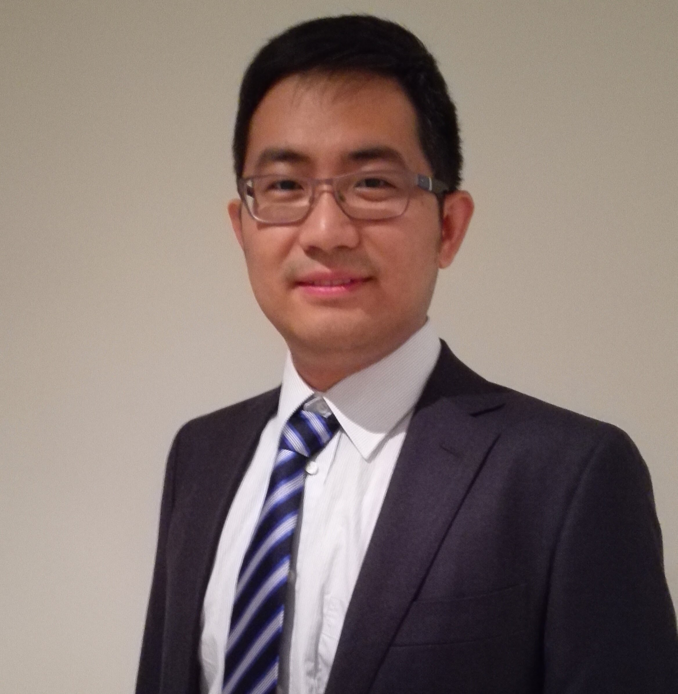

|
Zhixian SUISenior Lecturer at University of New South Wales, AustraliaEmail: zhixian.sui@unsw.edu.au Address: School of Public Health and Community Medicine, UNSW, Sydney, Australia Dr. Zhixian Sui carried out her doctoral research at the University of Adelaide, specializing in early origins of obesity in pregnant women who were overweight or obese. Later she worked on nutritional ecology and secondary analysis of national surveys as a post-doctoral research fellow at the University of Sydney. She works as a Senior Lecturer in the School of Public Health and Community Medicine and as the clinical research coordinator with The BMI Clinic, Double Bay, Australia. Her current research focuses on innovative non-surgical endoscopic bariatric procedures and big data analytics in healthcare. |
 |